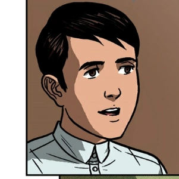
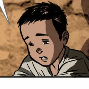

| CRISÓSTOMO IBARRA |
Description |
 |
He spent 7 years studying abroad in Europe and eventually came back to the Philippines. His father is Don Rafael Ibarra and the love of his life is Maria Clara, whom he was supposed to marry. |
| MARIA CLARA |
Description |
 |
A beautiful and charming woman that captivated the interest of many. She is Crisóstomo Ibarra's childhood friend and fiancée. Her mother, Doña Pia Alba, died at childbirth. |
| FATHER DÁMASO |
Description |
 |
A wicked and corrupt Spanish priest. He is the biological father of Maria Clara hence meaning he has power over her engagement with Ibarra. |
| BASILIO |
Description |
|  |
Crispín's older brother. He is working as a sexton, a caretaker of the church. He and his younger brother work everyday at the church to earn much needed money. |
| CRISPÍN |
Description |
|  |
Basilio's yonger brother. A young boy who works as a sexton at the church. He was falsely accused of stealing money from the church. |